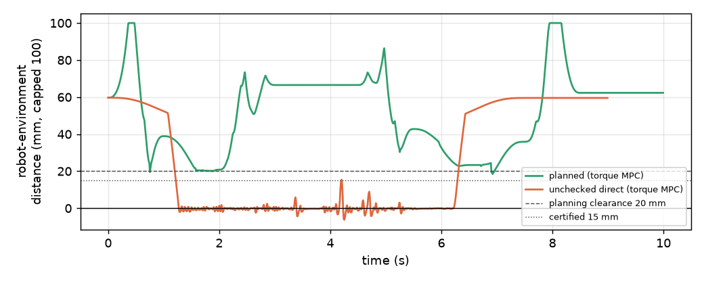
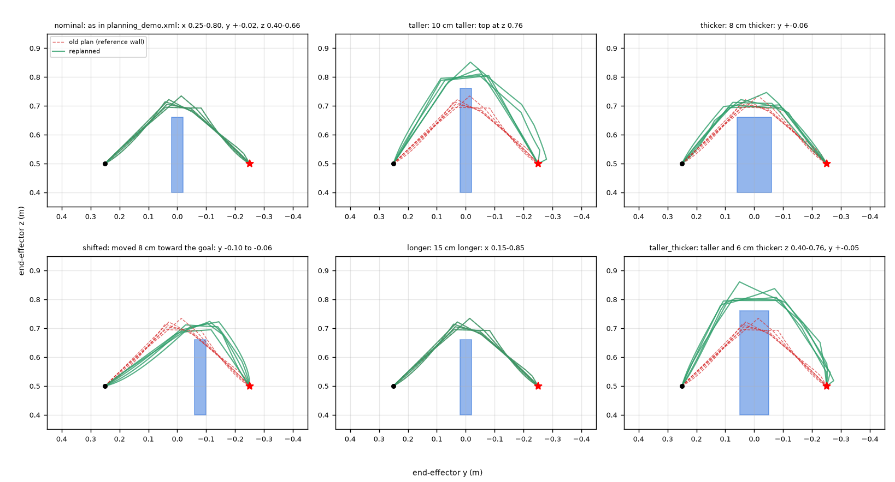

Every experiment in the repository: what it tested, what was varied and measured, how success was defined, how many runs it had, what it found, and what limits its conclusions. All numbers are quoted from the reports and CSV files in docs/research/; none were re-run for this guide.
| # | Experiment (version, driver) | Question | Runs |
|---|---|---|---|
| E1 | Controller benchmark (v0.2–v0.4, benchmark.py) | How accurately and within which limits does each controller track each reference? | 7 controllers × 10 scenarios, 1 deterministic run each |
| E2 | Fast/wrist diagnosis (v0.4, diagnose_torque_mpc.py) | Why does torque MPC lag on fast/wrist? | ~20 instrumented variants |
| E3 | Robustness sweep (v0.4, benchmark_robustness.yaml) | How do controllers degrade under mass error, pushes and noise? | 5 controllers × 9 mass scales + 8 disturbances + noise |
| E4 | MPC timing profile (v0.4, profile_mpc.py) | Does each MPC fit its deadline? Where does time go? | 5 variants × 4 repeats |
| E5 | Midphase ground truth (v0.5) | Does margin-based checking miss near misses? | 3,000 configurations per scene |
| E6 | Planning benchmark (v0.5, re-run v0.5.2, planning_benchmark.py) | Success, time, path quality, clearance; then closed-loop execution | 11 scenarios × 20 seeds; 24 + 6 executions |
| E7 | Wall-avoidance demo (v0.5, main.py) | Does the integrated system avoid the wall? | 5 configurations of the demo |
| E8 | Wall-variant replanning (v0.5.1, re-run v0.5.2, robustness_experiment.py) | Does replanning handle changed obstacle geometry? Are old plans unsafe? | 6 variants × 5 seeds; 60 executions |
| E9 | Box-box isolation and audit (v0.5.1, v0.5.2, audit_clearance.py) | Which MuJoCo distance answers are reliable? | 20,000 poses (v0.5.1); 11 × 4,000 (v0.5.2) |
| E10 | Checker profile, before/after (v0.5.2, profile_collision.py) | Cost and correctness of the fix on real planner workloads | 44,616 + 3 × 2,000 configurations; 4 × 10 plans |
demo, fast, wrist, near_limits, reach, demo_mismatch, push, and the
v0.4 fast_feasible, wrist_feasible, wrist_feasible_dsc).demo; 3–30× MPC advantage over
CTC on feasible references; servo MPC worse than PID except on reach and push).Varied: speed limit on/off, move duration, solver tolerance, warm start, hard vs soft constraints, weights, horizon, rate. Measured: tracking error, planned vs actual peak speed, prediction error versus a nonlinear rollout. Result: infeasible reference as primary cause; preview length the only setting that mattered (N = 10: 594, 25: 532, 40: 439 mrad on wrist); one-interval prediction accurate to 7e-6 rad; open-loop error growing ~k³ to 2–5e-2 rad at the end of the horizon (Chapter 9). Strength: the result is backed by an analytic lower bound (147 / 304 mrad) independent of the controller.
Varied: controller-model mass and inertia scale 0.75–1.25 (plant nominal); external forces (30 N in ±x, ±y, −z on the hand, 40 N on link 4, during motion, combined with mass error); white sensor noise (1e-4 rad, 1e-3 rad/s, fixed seed). Measured: max/RMS error, settling, orientation. Results in Chapter 9: the observer reduces error 3.6–11×; CTC + observer is best on every disturbance test. Limitations: only uniform mass scaling; friction, damping, armature and centre-of-mass errors never varied; noise is white Gaussian only.
Measured per update: linearization, OSQP update, OSQP solve, rest. Wall-clock times varied 2–3× between runs on the same
machine (a calibration mj_step varied from 26 to 85 µs), so the report gives the quietest of four runs plus the range.
Iteration counts are deterministic. Conclusion: 50 Hz fits on a quiet machine, 100 Hz does not (Chapter 9).
Random configurations (3,000 per scene) compared the checker's verdict with exhaustive mj_geomDistance over all
robot–environment pairs. With the midphase on, it missed 14 of 91 (planning_demo) and 16 of 74 (obstacles) near
misses; with it off, 0 false negatives and 0 false positives, at 24–26 µs per check. This experiment is now a permanent test.
node_budget where seed 3 happened to fit inside 8 nodes (reported as a success).Limitations: 20 seeds per scenario; one start/goal per scenario; timing noise ±25–30% between sessions; deadline overruns during this benchmark were wall-clock effects on a machine with ~0.4 GB free memory (an earlier full run was stopped for low memory), shown by bit-identical runs reporting 0, 10 and 12 overruns.

| Run | Outcome |
|---|---|
| planning on, torque MPC (v0.5.2) | both direct edges blocked; plans 217 / 268 ms; 4.39 → 1.41 rad and 4.74 → 1.19 rad (4 vertices each); final hand error 0.02 / 0.05 mm; 0 contact steps; 0 fallbacks |
| planning on, CTC (v0.5) | same plans; 0.01 / 0.05 mm; 0 contact steps |
| other planning seed (v0.5) | different routes (1.92 → 1.32, 3.47 → 1.48 rad); 0 contacts |
| planning off (v0.5) | right target rejected ("collision on path: wall-link6"); arm stays clear |
| planning off, checks disabled (v0.5) | 1,849 contact steps; stuck 307 mm from the goal |
Engineering significance: the full stack works end to end in simulation (IK, planning, time scaling, torque MPC, physics) and the negative control shows that the wall is a real obstacle. It is one start and two targets, so it is a demonstration, not a statistical result.

Engineering significance: re-checking a cached plan costs one path validation and is necessary; reusing plans blindly would have driven into the wall in two thirds of these episodes. The experiment demonstrates replanning with known geometry, not reaction to changes during motion.
Covered in detail in Chapter 11. In short: 44,000 audited poses showed that only MuJoCo's box-box margin contacts are unreliable (208 false "safe" answers, closest 1.85 mm); the v0.5.2 fix removed all decision errors on the planner's real workload (v0.5: 0 false safe, 91 false alarms out of 44,616) at a cost of ~25 µs per check and 6–46% longer planning.
If an event has probability $p$ per trial, the chance of seeing zero events in $n$ independent trials is $(1-p)^n$. Setting this to 5% gives the "rule of three": with 95% confidence, $p \lesssim 3/n$. For the wall-variant experiment's 0/30 planning failures this bound is about 10%; for 0/60 execution failures about 5%; for the planning benchmark's 0/20 per scenario about 15%. These experiments therefore show the methods work in these settings; they do not show failure rates below a few percent. (And the trials are not fully independent: same start, target and machine.)
All simulations start from fixed states, all random choices use fixed seeds, and versions are recorded in every results file. The
v0.4 report re-ran the v0.3 baseline and matched every tracking and constraint metric (MPC differences ≤ 1.6e-9 rad from
floating-point round-off). v0.5.2 re-ran v0.5.1's planning in v0.5 mode and reproduced all 30 path lengths exactly. Planning is
deterministic as long as no wall-clock budget ends a search. Raw outputs go to the git-ignored results/; copies of the key tables
are committed as CSV in docs/research/. Appendix D lists the commands.